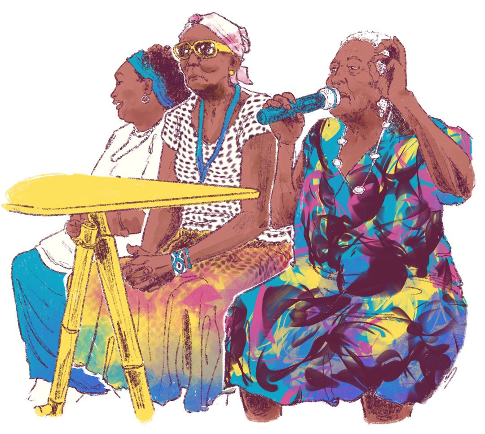

Pedagogias em movimento: contribuições dos movimentos indígenas e negros
Entre os movimentos políticos e sociais, queremos destacar, neste momento, os movimentos dos povos indígenas e do povo negro afro-brasileiro. O destaque se torna ainda mais relevante quando observamos o enfrentamento e a resistência feitos por estes povos, tendo em vista o ao qual suas ciências, suas culturas, suas histórias e suas artes foram submetidas.
Historicamente, a educação brasileira foi estruturada para valorizar os conhecimentos que atendem aos interesses dominantes, marginalizando ou apagando as culturas e as identidades dos povos indígenas e da população negra.
Essa estrutura hegemônica incidiu sobre os currículos escolares que, de seus projetos, apagaram negros e indígenas cientistas, historiadores, artistas e filósofos. Além disso, a marginalização e o apagamento desses povos também advém da lógica meritocrática, competitiva e fragmentada que os componentes curriculares tradicionais apresentam. No entanto, como veremos, os movimentos sociais indígena e negro não apenas lutaram pela preservação de suas culturas e direitos, mas também propuseram novas pedagogias que desafiam o modelo educacional tradicional.
No que diz respeito ao movimento indígena, destacamos sua importância na defesa da ideia de que as múltiplas culturas, os modos de viver e as heranças ancestrais de povos distintos em nosso país devem ser exigidas, valorizadas e presentes no cotidiano das escolas. Essa insurgência no reconhecimento de sua cidadania é fruto da presença determinante dos povos em luta em .
.png)
Título: As resistências dos povos originários na luta atual
Fonte: Magela (2015).
Elaboração: Prosa (2025e).
Os povos originários deixaram para trás como modo de dominação para hoje ser uma ferramenta de resistência e de continuidade de etnias dos indígenas. Desse modo, o desenvolvimento da educação escolar indígena foi construído a partir das experiências alternativas protagonizadas por lideranças comunitárias, em parceria com universidades e setores progressistas da Igreja Católica. Segundo Candau e Russo (2010, p. 157),
Na nova configuração, o bilinguismo deixa de ser visto apenas como estratégia de transição ou meio para manutenção de uma cultura ameaçada, para ser inserido em um discurso mais amplo, onde a perspectiva intercultural pressiona o modelo escolar clássico e inclui nela não apenas diferentes línguas, mas, sobretudo, diferentes culturas.
Já no que tange a luta do movimento negro, este caminhou não apenas na perspectiva de valorização da cultura afro-brasileira, mas também na luta contra o racismo e contra a apologia da mestiçagem como expressão de democracia racial no nosso país, que criou um imaginário de que as relações sociais e raciais mantidas entre os diferentes grupos, mesmo em situações de opressão, era regida pela ideia de cordialidade.
A cordialidade advém de “homem cordial”, ideia desenvolvida por Sérgio Buarque de Holanda a partir da repetição e do aprofundamento de teses de Gilberto Freyre.
As teses desses dois autores sustentam que, no Brasil, ocorreu uma escravidão amena e uma relação fraternal entre escravizadores e escravizados, como resultado de suposta “índole cordial” dos povos indígenas e negros, como se houvesse uma aceitação pacífica daquela condição subalterna que enfrentavam. Este argumento fundamentou a ideia de que vivemos uma “democracia racial”, na qual há uma convivência harmônica, tolerável e respeitosa entre negros, indígenas e brancos. Ainda nesta concepção, ambos defendem que um suposto fracasso do país resulta da condição étnico/racial inerente de indígenas e negros, desqualificando-os a partir de sua condição cultural.
Para saber mais sobre esse assunto, leia o texto "Que morra o homem cordial” (2017), uma crítica de Ramatis Jacino ao livro Raízes do Brasil (1936), de Sérgio Buarque de Holanda.
As denúncias e o esgarçamento dos modos como o racismo atravessa a vida e as condições de sobrevivência foi pauta do movimento negro por meio de diversos agentes, como o, criado por . Mas foi a partir da década de 1970 que, na luta contra a ditadura militar e contra o racismo, ampliou-se a compreensão da relação entre raça e classe e, consequentemente, das reivindicações de abertura democrática e de políticas públicas. Essa interligação entre raça e classe, segundo Nilma Lino Gomes (2019), amplificou as reflexões, as denúncias e as demandas desse movimento social.
.png) Título: Abdias do Nascimento Fonte: Stuckert (2006). Elaboração: Prosa (2025f).
Título: Abdias do Nascimento Fonte: Stuckert (2006). Elaboração: Prosa (2025f).
.png)
Título: A resistência do Movimento Negro na Ditadura Militar
Fonte: Comissão da Verdade de São Paulo (2015); Versus (1978).
Elaboração: Prosa (2025g).
A Constituição Federal do Brasil (1988) marcou o início de importantes conquistas para o movimento negro, fruto de sua intensa mobilização para pressionar o Estado brasileiro. Entre os avanços obtidos, ainda que parciais, destacam-se a criminalização do racismo e a demarcação de terras quilombolas, essenciais para a valorização das comunidades tradicionais.
No campo educacional, a Lei 10.639, de janeiro de 2003, atualizada pela Lei 11.645, de março de 2008, tornou obrigatório o ensino da história e cultura afro-brasileira e indígena, enquanto a Lei de Cotas (12.711 de 2012, atualizada pela Lei 13.409 de 2016) consolidou a inclusão de grupos historicamente excluídos nas instituições de Ensino Superior. Além disso, as Diretrizes Curriculares para Educação Quilombola (Parecer 16/2012 e Resolução 08/2012 do Conselho Nacional de Educação) e, mais recentemente, a Política Nacional de Equidade, Educação para as Relações Étnico-Raciais e Educação Escolar Quilombola, formalizada pela Portaria 470/2024, reforçam o compromisso com uma educação mais inclusiva e antirracista. Esses marcos demonstram o impacto do movimento negro na construção de políticas públicas voltadas à reparação histórica e à valorização da diversidade cultural brasileira.
Nesse caminhar, Gomes (2019, p. 143) destaca o protagonismo do movimento negro, afirmando que ele pode ser considerado um sujeito coletivo. Juntamente com outros movimentos operários e populares, o movimento negro emerge a partir da década de 1970 e se consolida como um ator político, debatendo o cotidiano por meio de formas diferenciadas de expressão e de experiências. A autora afirma ainda que o “Movimento Negro é Educador” (Gomes, 2017, p. 10) ao instituir modos de luta e saberes voltados à emancipação.

Título: A luta do Movimento Negro voltada para a emancipação humana
Fonte: Vilela (2012).
Elaboração: Prosa (2025h).
Cabe destacar que tanto o movimento negro quanto o movimento indígena, apesar de pautas muito específicas, tratam em suas confluências do direito à uma escola que forme para o trabalho que se conecte com valores ancestrais de seus povos, que rompa com ciclos de pobreza e subordinação e que, por meio deste, eduque para construção de subjetividades ativas e de cidadãos capazes de pensar sua realidade e de construir coletivamente saídas para seus problemas.
Para refletir: sobre a cultura afro-brasileira e indígena
Chegamos ao segundo momento reflexivo deste capítulo!
A Lei 10.639, de janeiro de 2003, atualizada pela Lei 11.645, de março de 2008, determina a obrigatoriedade do ensino da história e da cultura afro-brasileira e indígena e está em vigor há mais de 20 anos. Como essa legislação tem sido implementada em sua escola? Você já participou ou observou alguma prática educativa relacionada a esse tema?
Em sua escola ou em seu campus já foi realizado algum curso de formação acerca desta legislação? Como você entende que o processo formativo pode colaborar para implementação das diretrizes curriculares para as relações étnico-raciais?
Lembre-se de registrar suas impressões em seu Memorial e/ou seguir as orientações de seu tutor.